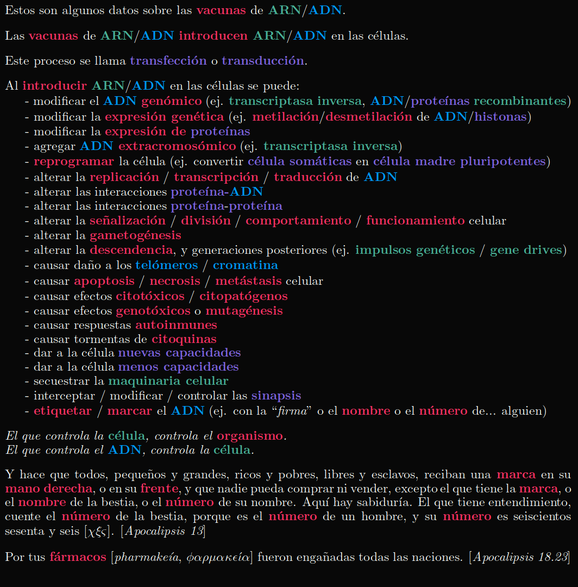
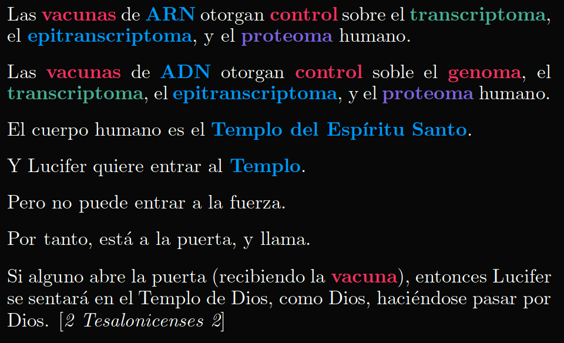
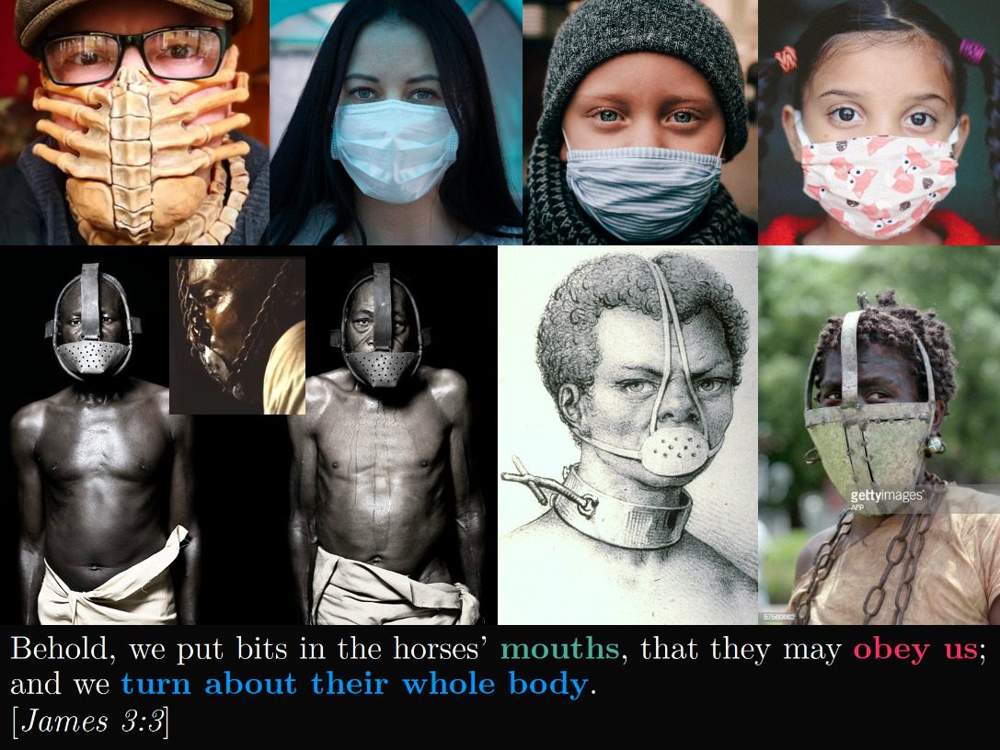
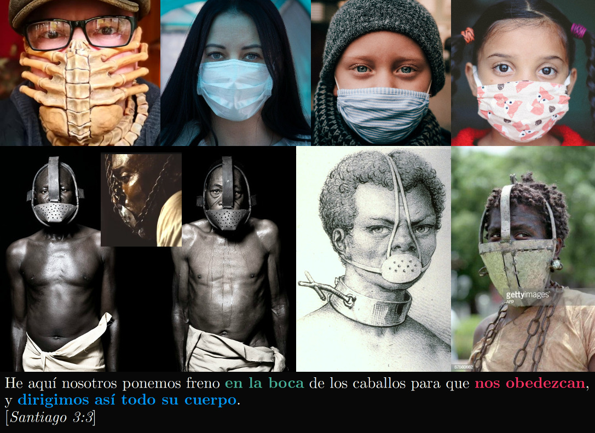
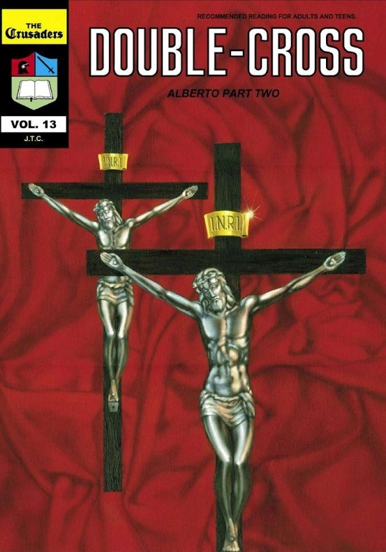
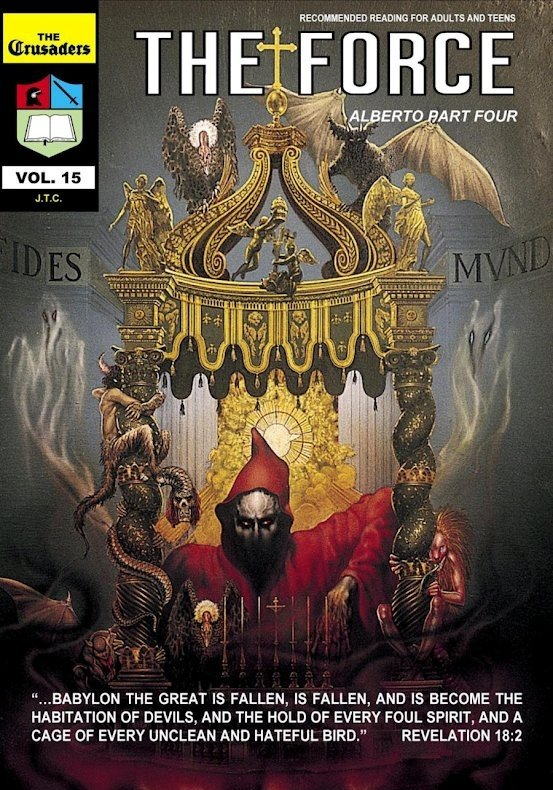
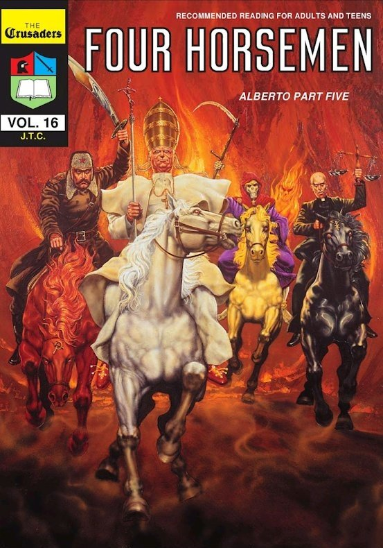
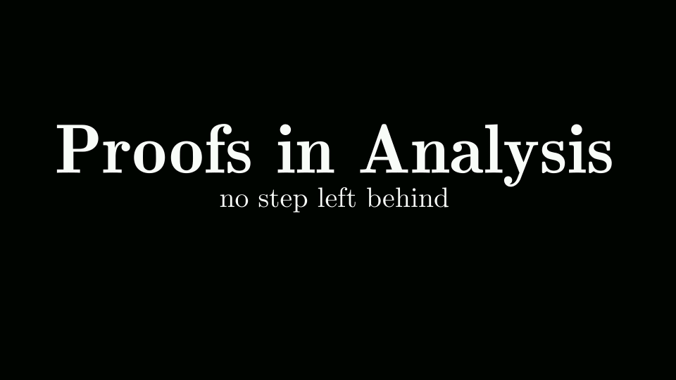
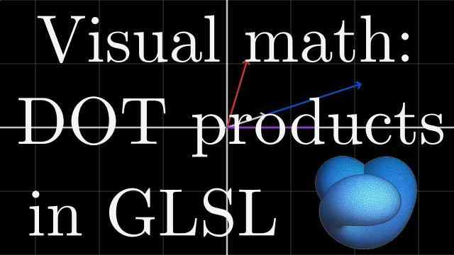

mathIsART
YouTube
GitHub
code
Source
mathIsART
Jesus is King of kings
Get started
As I have loved you
also ye
love one another
John 13:34
El Primer Jinete del Apocalipsis y la vacuna
El
jinete del Caballo Blanco
[Apocalipsis 6.2] viene con un arco.
Arco
en griego antiguo es
tóxon
.
Toxina
viene de
toxikón
(veneno para FLECHAS), que viene de
tóxon
(arco). O sea, el jinete del Caballo Blanco viene con una
toxina para FLECHAS
. O deberíamos decir
agujas
? Es decir, una
vacuna
.

Vacunas de ARN/ADN: Ficha Técnica
Las vacunas clásicas hacen
daño
a millones de personas cada año. Pero las
vacunas de ARN/ADN
son muchísimo peor: al insertar
material genético
en las células y forzarlas a expresar
genes sintéticos
(
transfeccion
/
transducción
),
convierten a los seres humanos en organismos transgénicos
. De estas vacunas surgen los
zombies
.

La Abominación Desoladora
Classical vaccines
harm
millions every year. But
ARN/DNA vaccines
are far worse: by inserting
genetic material
into cells and forcing them to express
synthetic genes
(
transfection
/
transduction
), they turn
human beings into transgenic organisms
. These vaccines are where the
undead
come from.
Esta
vacuna
los va a
matar
Para más profecías, visita el blog
The Master's Voice
.
Blog: https://the-masters-voice.com/
YouTube: https://www.youtube.com/channel/UCbcV-IwTyG5WjMdWN6mlFiw
This
vaccine
will
kill
them
For more prophecies, visit the
The Master's Voice blog
.
Blog: https://the-masters-voice.com/
YouTube: https://www.youtube.com/channel/UCbcV-IwTyG5WjMdWN6mlFiw
El Templo de Dios
Escrito está que el
Hijo de Perdición
"se sienta en
el templo de Dios
como Dios, haciéndose pasar por Dios"
[2 Tesalonicenses 2].
Qué
quiere decir esto?
Satanism Exposed in America Today, by Pamela Rae Schuffert
The Devil, aka. Lucifer, is the prince of this world. He has given power and authority [Revelation 13] to the rulers of the Earth, who worship him. How is Lucifer worshipped, you ask? With blood: human sacrifice, torture, rape. And the elite are not the only ones doing it.
Westcott & Hort: Occultists or Christians?
Revelation 22
gives grave warnings against adding or subtracting from the
Word of God
. And yet this is
precisely
what a couple of occultists in the 19th century,
Westcott
and
Hort
, set out to do. The result was a
NEW
Greek New Testament
, whose modern incarnation is called
Nestle-Aland/USB
. Now,
almost all
modern Bible versions
have been corrupted with Luciferian ideas (notably: the
NIV
Bible and the
Vatican
's official Bible).
COVID-19 and the Agendas to Come, Red-Pilled, by James Perloff
The world is headed towards the dystopia prophesied in
Revelation 13
(a mix between
1984
and
Brave New World
), for which
COVID-19
serves as stepping stone. In his book
COVID-19 and the Agendas to Come, Red-Pilled
, journalist and author
James Perloff
does a well-sourced deep dive into
COVID-19
: the lockdowns, the fear, the origin, the purpose, the future. After selling 3500+ copies, the book was
censored
by
Amazon
.
Support
James Perloff
by buying a hard copy of his book at
https://jamesperloff.net/order-covid-19-book
or by donating at
https://jamesperloff.net/donations/
.

Masks Don't Work
COVID-19 is a hoax perpetrated on a public that insists on trusting the Luciferians that run the world. Masks don't protect against the virus, but they weaken the immune system and harm the brain. And the New World Order, described in Revelation 13, also known as the Beast System, is coming to enslave humanity.

Las Máscaras No Funcionan
COVID-19 es una estafa perpetrada contra un público que insiste en confiar en los Luciferinos que gobiernan el mundo. Las mascarillas no protegen contra el virus, pero debilitan el sistema inmunológico y dañan el cerebro. Y el Nuevo Orden Mundial, descrito en Apocalipsis 13, también conocido como el Sistema de la Bestia, viene a esclavizar a la humanidad.
Plandemic
The medical & scientific communities have been usurped by
dark forces
... dark forces working for the prince/
god
of this world [1 John 5:19, John 16:11, 2 Corinthians 4:4, Matthew 4:8-10, Luke 4:5-8]. And soon no one will be able to buy or sell without the
Mark of Vaccination
[Revelation 13-14].
Here,
Judy Mikovits
begins to expose the
2020 plandemic
.
But this is only the tip of the iceberg.
Mark of the Beast technology: Quantum dot microneedle certificate of vaccination
Vaccines destroy millions of lives every year. Now, the Luciferian elite wants
all
, small and great, rich and poor, free and bond, to receive a
Mark of vaccination
. Their method of choice?
Quantum dots
&
microneedles
.
Mark of the Beast technology: Snake fang-inspired microneedle vaccine delivery system
Vaccines destroy millions of lives every year. Now, the Luciferian elite wants
all
, small and great, rich and poor, free and bond, to receive a
DNA-altering vaccine
. Their delivery method? The
microneedle array patch
.
Alberto: ex-Jesuit Priest Testimony (1-8)
In his testimony, Alberto Rivera, a former
Jesuit priest
, reveals the inner workings of the secretive
Jesuits
, their true agenda, and the powers that they serve.
Support
Chick Publications
at
chick.com
.
Alberto, Alberto Series Part 1 (The Crusaders Book 12)
As a
Jesuit
, Alberto helped destroy churches and ministries. But as he read
the Scriptures
, he saw that
Catholicism couldn't save
. This is the emotional story of a Jesuit priest who left the Roman Catholic Church and found
salvation through faith in Jesus Christ alone
. He became a hunted man, because he knew the carefully guarded secrets of
the Vatican
.

Double-Cross, Alberto Series Part 2 (The Crusaders Book 13)
After
Jesuit
priest
Alberto Rivera
found
Christ
by
faith alone
(not faith in his Church) he was a hunted man. No man can leave the
Jesuit
order alive! This is part 2 of his personal story. He reveals how the Jesuits
infiltrate Protestant organizations
and warns of "
false brethren
" in our midst. Learn why he was placed on a death list, read the
incredible oath
he had to take as a Jesuit, and see why the
Ecumenical Movement
will lead to the ultimate
Inquisition
.
The Godfathers, Alberto Series Part 3 (The Crusaders Book 14)
Here's how the
Roman Catholic Church
, as the
Mother of Abominations
(Rev. 17), caused many wars. Was
the Vatican
responsible for
World Wars
I & II? Why did Cardinal Pacelli (later to become
Pope Pius VII
) make a special treaty with
Adolf Hitler
?

The Force, Alberto Series Part 4 (The Crusaders Book 15)
Movies/TV have conditioned people to believe that a
Catholic priest
is required to
exorcise demons
who have taken control of a person. Is this true, or is it a scheme by Satan to make the people rely more and more on their priest for protection and cost them their souls? Learn how
the Vatican
is using its
occult
force to deceive hundreds of millions. It's the
habitation of devils
described in Rev. 18:2.

Four Horsemen, Alberto Series Part 5 (The Crusaders Book 16)
Learn how
the papacy
fulfills Bible prophecies of the
Antichrist
. Who are the
Four Horsemen
of
Revelation
? Who did Martin Luther and other Reformers insist was the
Antichrist
? See the chart containing the front organizations through which the
Jesuit
order seeks to dominate the world economy for the
Antichrist
.
The Prophet, Alberto Series Part 6 (The Crusaders Book 17)
Learn how
the papacy
helped start
Islam
, only to have this new daughter rebel against her. You'll understand the Arab's place in Bible prophecy.
Muslims
have been saved by reading this book. See how
Rome
guided the development of
Islam
, only to be double-crossed later. Learn how Antichrist's
One World Church
is forming!
Jesuits, Alberto Series Part 7 (The Crusaders Book 20)
Who knows more about the
Jesuits
than the
Jesuits
themselves? From their own writings, we'll learn that the Jesuits' real goal is to
destroy
true Christians and make the world
submit to the Pope
, the successor of the Roman Emperor. So
Jesus
commanded, "
Come out of her, my people, that ye be not partakers of her sins, and that ye receive not of her plagues
" (Revelation 18:4).
The Big Betrayal, Alberto Series Part 8
The true story of
Charles Chiniquy
, a former
Roman Catholic
priest. Chiniquy also reveals how
Abraham Lincoln
's legal assistance against the
Jesuits
set him up for his murder. Originally published in book form as
50 Years in the Church of Rome
.
I know thy works, and where thou dwellest, even where Satan's seat is (Revelation 2:13)
Jesuit
-trained
Anthocy Fauci
funded
Coronavirus bioweapon
research in
Wuhan
. In 2017, he "predicted" a pandemic under Trump. Now, Fauci wants
masks
(which weaken the immune system),
lockdowns
(which cripple the economy), and
DNA-altering vaccines
for all.
We wrestle not against flesh and blood (Ephesians 6:12)
Jesuit
-trained
Anthocy Fauci
funded
Coronavirus bioweapon
research in
Wuhan
. In 2017, he "predicted" a pandemic under Trump. Now, Fauci wants
masks
(which weaken the immune system),
lockdowns
(which cripple the economy), and
DNA-altering vaccines
for all.
We wrestle not against flesh and blood (Ephesians 6:12)
Jesuit
-trained
Anthocy Fauci
funded
Coronavirus bioweapon
research in
Wuhan
. In 2017, he "predicted" a pandemic under Trump. Now, Fauci wants
masks
(which weaken the immune system),
lockdowns
(which cripple the economy), and
DNA-altering vaccines
for all.

Proofs in Analysis: no step left behind
A textbook in progress for a first course in Real Analysis.
The singleton set is unique up to unique set-isomorphism
A
singleton
set is a set with one element. There is "
essentially just one
" singleton set. This a very different situation than that for the empty set, where we know there's
precisely one
empty set
. Why? How?
The preimage function is a morphism of Boolean algebras
Every function between
sets
gives rise to a function between their
power sets
, in the
opposite direction
. Power sets are
Boolean algebras
, and this function between power sets preserves the Boolean algebra structure: it is a
morphism
of Boolean algebras. This we explain and prove.
The fundamental theorem of equivalence relations
Every
equivalence relation
yields a
partition
. Every
partition
yields an
equivalence relation
. This is one of the first things one can prove in math. Here we do just that.
Unions and intersections
From
topology
to
measure theory
, being comfortable around
unions
and
intersections
is very important. Here we give examples and go over the
definitions
.

Coding a visualization of dot products in GLSL
Dot products
are ubiquitous in math and physics. In this YouTube video, we use dot products to
visualize
... dot products.
The pigeonhole principle
The
population
of New York is larger than the number of hairs on any New Yorker. It follows that there's (at least) two New Yorkers with exactly the same number of hairs. This is the
pigeonhole principle
.
{kind=link}
{kind=link}
{kind=link}
{kind=link}
{kind=link}
{kind=link}
{kind=link}
{kind=link}
{kind=link}